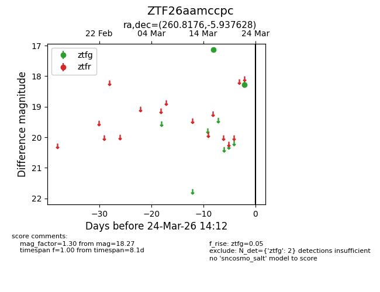
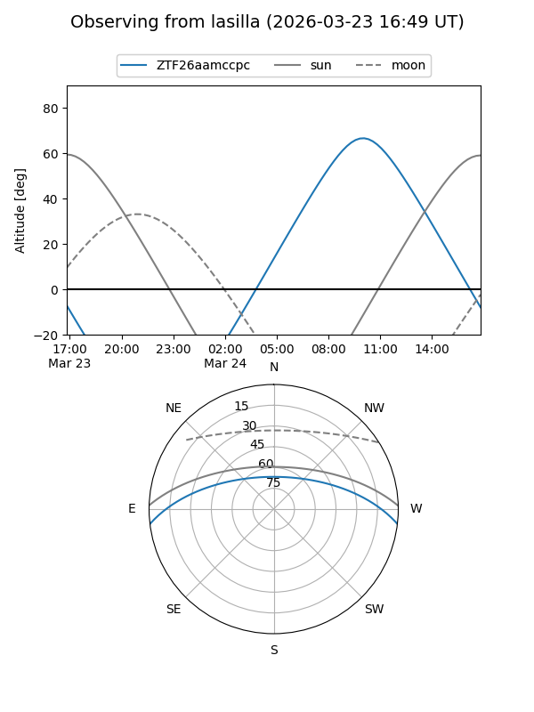
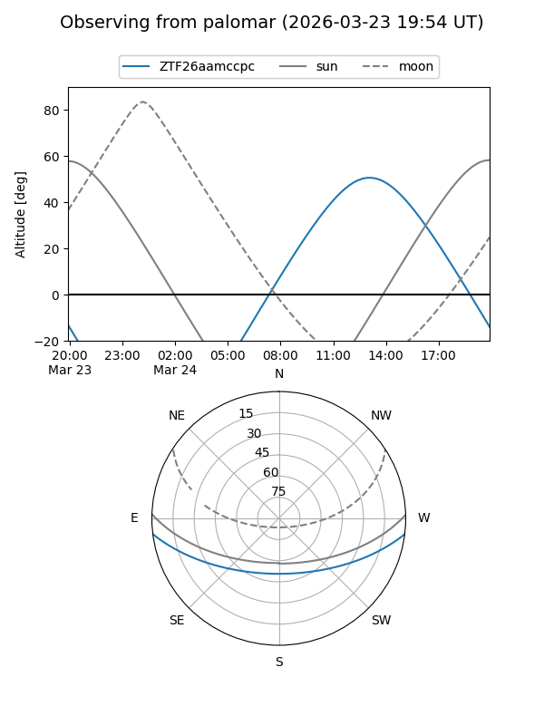

ZTF26aamccpc
Target ZTF26aamccpc at 2026-03-24 14:15
Aliases and brokers:
FINK: link
Lasair: link
ALeRCE: link
alt names
ZTF26aamccpc (ztf,fink_ztf)
Coordinates:
equatorial (ra, dec) = 260.8176,-5.93763
equatorial (HMS+DMS) = 17:23:16.24,-05:56:15.46
galactic (l, b) = (17.0521,+16.56102)
Flags:
Photometry:
last ztfg=18.27
2 ztfg detections
Lightcurve

Visibility


Additional plots